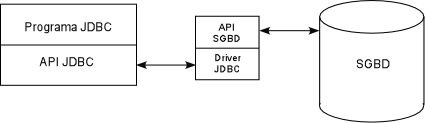
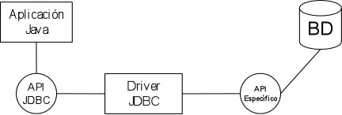
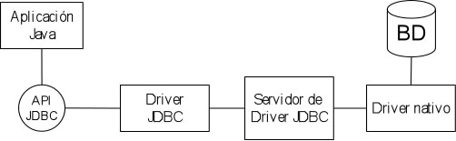

Consultas a una BD con JDBC
Introducción a JDBC
En la mayoría de las aplicaciones que nos vamos a encontrar, aparecerá una base de datos como fuente de información. JDBC nos va a permitir acceder a bases de datos (BD) desde Java. Con JDBC no es necesario escribir distintos programas para distintas BD, sino que un único programa sirve para acceder a BD de distinta naturaleza. Incluso, podemos acceder a más de una BD de distinta fuente (Oracle, Access, MySql, etc.) en la misma aplicación. Podemos pensar en JDBC como el puente entre una base de datos y nuestro programa Java. Un ejemplo sencillo puede ser un applet que muestra dinámicamente información contenida en una base de datos. El applet utilizará JDBC para obtener dichos datos.
El esquema a seguir en un programa que use JDBC es el siguiente:
Un programa Java que utilice JDBC primero deberá establecer una conexión con el SGBD. Para realizar dicha conexión haremos uso de un driver específico para cada SGBD que estemos utilizando. Una vez establecida la conexión ya podemos interrogar la BD con cualquier comando SQL (select, update, create, etc.). El resultado de un comando select es un objeto de la clase ResultSet, que contiene los datos que devuelve la consulta. Disponemos de métodos en ResultSet para manejar los datos devueltos. También podemos realizar cualquier operación en SQL (creación de tablas, gestión de usuarios, etc.). 
Para realizar estas operaciones necesitaremos contar con un SGBD (sistema gestor de bases de datos) además de un driver específico para poder acceder a este SGBD. Vamos a utilizar dos SGBD: MySQL (disponible para Windows y Linux, de libre distribución) y PostGres (sólo para Linux, también de libre distribución).
Drivers de acceso
Los drivers para poder acceder a cada SGBD no forman parte de la distribución de Java por lo que deberemos obtenerlos por separado. ¿Por qué hacer uso de un driver?. El principal problema que se nos puede plantear es que cada SGBD dispone de su propio API (la mayoría propietario), por lo que un cambio en el SGBD implica una modificación de nuestro código. Si colocamos una capa intermedia, podemos abstraer la conectividad, de tal forma que nosotros utilizamos un objeto para la conexión, y el driver se encarga de traducir la llamada al API. El driver lo suelen distribuir las propias empresas que fabrican el SGBD.
Tipos de drivers
Existe un estándar establecido que divide los drivers en cuatro grupos:
-
Tipo 1: Puente JDBC-ODBC. ODBC (Open Database Connectivity) fue creado
para proporcionar una conexión a bases de datos en Microsoft Windows.
ODBC permite acceso a bases de datos desde diferentes lenguajes de programación,
tales como C y Cobol. El puente JDBC-ODBC permite enlazar Java con cualquier
base de datos disponible en ODBC. No se aconseja el uso de este tipo de driver
cuando tengamos que acceder a bases de datos de alto rendimiento, pues las
funcionalidades están limitadas a las que marca ODBC. Cada cliente
debe tener instalado el driver. J2SE incluye este driver en su versión
Windows y Solaris.

- Tipo 2: Parte Java, parte driver nativo. Es una combinación de implementación Java y API nativo para el acceso a la base de datos. Este tipo de driver es más rápido que el anterior, pues no se realiza el paso por la capa ODBC. Las llamadas JDBC se traducen en llamadas específicas del API de la base de datos. Cada cliente debe tener instalado el driver. Tiene menor rendimiento que los dos siguientes y no se pueden usar en Internet, ya que necesita el API de forma local. 
- Tipo 3: Servidor intermediario de acceso a base de datos. Este tipo de driver proporciona una abstracción de la conexión. El cliente se conecta a los SGBD mediante un componente servidor intermedio, que actúa como una puerta para múltiples servidores. La ventaja de este tipo de driver es el nivel de abstracción. El servidor de aplicaciones WebLogic incorpora este tipo de driver. 
-
Tipo 4: Drivers Java. Este es el más directo. La
llamada JDBC se traduce
directamente en una llamada de red a la base de datos, sin
intermediarios. Proporcionan
mejor rendimiento. La mayoría de SGBD proporcionan drivers de
este tipo.

Instalación de drivers
La distribución de JDBC incorpora los drivers para el puente JDBC-ODBC que nos permite acceder a cualquier BD que se gestione con ODBC. Para MySQL, deberemos descargar e instalar el SGBD y el driver, que puede ser obtenido en la dirección http://dev.mysql.com/doc/mysql/en/Java_Connector.html. El driver para PostGres se obtiene en http://jdbc.postgresql.org
Para instalar el driver lo único que deberemos hacer es incluir el fichero JAR que lo contiene en el CLASSPATH. Por ejemplo, para MySQL:
export CLASSPATH=$CLASSPATH:
/directorio-donde-este/mysql-connector-java-3.0.15-ga-bin.jar
Con el driver instalado, podremos cargarlo desde nuestra aplicación simplemente cargando dinámicamente la clase correspondiente al driver:
Class.forName("com.mysql.jdbc.Driver");
El driver JDBC-ODBC se carga como se muestra a continuación:
Class.forName("sun.jdbc.odbc.JdbcOdbcDriver");
Y de forma similar para PostGres:
Class.forName("org.postgresql.Driver");
La carga del driver se debería hacer siempre antes de conectar con la BD.
Como hemos visto anteriormente, pueden existir distintos tipos de drivers para la misma base de datos. Por ejemplo, a una BD en MySQL podemos acceder mediante ODBC o mediante su propio driver. Podríamos pensar que la solución más sencilla sería utilizar ODBC para todos las conexiones a SGBD. Sin embargo, dependiendo de la complejidad de la aplicación a desarrollar esto nos podría dar problemas. Determinados SGBD permiten realizar operaciones (transacciones, mejora de rendimiento, escabilidad, etc.) que se ven mermadas al realizar su conexión a través del driver ODBC. Por ello es preferible hacer uso de driver específicos para el SGBD en cuestión.
El ejemplo más claro de problemas en el uso de drivers es con los Applets. Cuando utilicemos acceso a bases de datos mediante JDBC desde un Applet, deberemos tener en cuenta que el Applet se ejecuta en la máquina del cliente, por lo que si la BD está alojada en nuestro servidor tendrá que establecer una conexión remota. Aquí encontramos el problema de que si el Applet es visible desde Internet, es muy posible que el puerto en el que escucha el servidor de base de datos puede estar cortado por algún firewall, por lo que el acceso desde el exterior no sería posible.
El uso del puente JDBC-ODBC tampoco es recomendable en Applets, ya que requiere que cada cliente tenga configurada la fuente de datos ODBC adecuada en su máquina. Esto podemos controlarlo en el caso de una intranet, pero en el caso de Internet será mejor utilizar otros métodos para la conexión.
En cuanto a las excepciones, debemos capturar la excepción SQLException en casi todas las operaciones en las que se vea involucrado algún objeto JDBC.
Conexión a la BD
Una vez cargado el driver apropiado para nuestro SGBD deberemos establecer la conexión con la BD. Para ello utilizaremos el siguiente método:
Connection con = DriverManager.getConnection(url); Connection con = DriverManager.getConnection(url, login, password);
La conexión a la BD está encapsulada en un objeto Connection. Para su creación debemos proporcionar la url de la BD y, si la BD está protegida con contraseña, el login y password para acceder a ella. El formato de la url variará según el driver que utilicemos. Sin embargo, todas las url tendrán la siguiente forma general: jdbc:<subprotocolo>:<nombre>, con subprotocolo indicando el tipo de SGBD y con nombre indicando el nombre de la BD y aportando información adicional para la conexión.
Para conectar a una fuente ODBC de nombre bd, por ejemplo, utilizaremos la siguiente URL:
Connection con = DriverManager.getConnection("jdbc:odbc:bd");
En el caso de MySQL, si queremos conectarnos a una BD de nombre bd alojada en la máquina local (localhost) y con usuario miguel y contraseña m++24, lo haremos de la siguiente forma:
Connection con =
DriverManager.getConnection("jdbc:mysql://localhost/bd",
"miguel", "m++24");
En el caso de PostGres (notar que hemos indicado un puerto de conexión, el 5432):
Connection con = DriverManager.getConnection(
"jdbc:postgresql://localhost:5432/bd", "miguel", "m++24");
Podemos depurar la conexión y determinar qué llamadas está realizando JDBC. Para ello haremos uso de un par de métodos que incorpora DriverManager. En el siguiente ejemplo se indica que las operaciones que realice JDBC se mostrarán por la salida estándar:
DriverManager.setLogWriter(new PrintWriter(System.out, true));
Una vez realizada esta llamada también podemos mostrar mensajes usando:
DriverManager.println("Esto es un mensaje");
Consulta a una base de datos con JDBC
Creación y ejecución de sentencias SQL
Una vez obtenida la conexión a la BD, podemos utilizarla para realizar consultas, inserción y/o borrado de datos de dicha BD. Todas estas operaciones se realizarán mediante lenguaje SQL. La clase Statement es la que permite realizar todas estas operaciones. La instanciación de esta clase se realiza haciendo uso del siguiente método que proporciona el objeto Connection:
Statement stmt = con.createStatement();
Podemos dividir las sentencias SQL en dos grupos: las que actualizan la BD y las que únicamente la consultan. En las siguientes secciones veremos cómo podemos realizar estas dos acciones.
Sentencias de consulta
Para obtener datos almacenados en la BD podemos realizar una consulta SQL (query). Podemos ejecutar la consulta utilizando el objeto Statement, pero ahora haciendo uso del método executeQuery al que le pasaremos una cadena con la consulta SQL. Los datos resultantes nos los devolverá como un objeto ResultSet.
ResultSet result = stmt.executeQuery(query);
La consulta SQL nos devolverá una tabla, que tendrá una serie de campos y un conjunto de registros, cada uno de los cuales consistirá en una tupla de valores correspondientes a los campos de la tabla.
Los campos que tenga la tabla resultante dependerán de la consulta que hagamos, de los datos que solicitemos que nos devuelva. Por ejemplo, podemos solicitar que una consulta nos devuelva los campos expediente y nombre de los alumnos o bien que nos devuelva todos los campos de la tabla alumnos.
Veamos el funcionamiento de las consultas SQL mediante un ejemplo:
String query = "SELECT * FROM ALUMNOS WHERE sexo = 'M'"; ResultSet result = stmt.executeQuery(query);
En esta consulta estamos solicitando todos los registros de la tabla ALUMNOS en los que el sexo sea mujer (M), pidiendo que nos devuelva todos los campos (indicado con *) de dicha tabla. Nos devolverá una tabla como la siguiente:
| exp | nombre | sexo |
| 1286 | Amparo | M |
| 1287 | Manuela | M |
| 1288 | Lucrecia | M |
Estos datos nos los devolverá como un objeto ResultSet. A continuación veremos cómo podemos acceder a los valores de este objeto y cómo podemos movernos por los distintos registros.
El objeto ResultSet dispone de un cursor que estará situado en el registro que podemos consultar en cada momento. Este cursor en un principio estará situado en una posición anterior al primer registro de la tabla. Podemos mover el cursor al siguiente registro con el método next del ResultSet. La llamada a este método nos devolverá true mientras pueda pasar al siguiente registro, y false en el caso de que ya estuviéramos en el último registro de la tabla. Para la consulta de todos los registros obtenidos utilizaremos normalmente un bucle como el siguiente:
while(result.next()) {
// Leer registro
}
Ahora necesitamos obtener los datos del registro que marca el cursor, para lo cual podremos acceder a los campos de dicho registro. Esto lo haremos utilizando los métodos getXXXX(campo) donde XXXX será el tipo de datos de Java en el que queremos que nos devuelva el valor del campo. Hemos de tener en cuenta que el tipo del campo en la tabla debe ser convertible al tipo de datos Java solicitado. Para especificar el campo que queremos leer podremos utilizar bien su nombre en forma de cadena, o bien su índice que dependerá de la ordenación de los campos que devuelve la consulta. También debemos tener en cuenta que no podemos acceder al mismo campo dos veces seguidas en el mismo registro. Si lo hacemos nos dará una excepción.
Los tipos principales que podemos obtener son los siguientes:
| getInt | Datos enteros |
| getDouble | Datos reales |
| getBoolean | Campos booleanos (si/no) |
| getString | Campos de texto |
| getDate | Tipo fecha (Devuelve Date) |
| getTime | Tipo hora (Devuelve Time) |
Si queremos imprimir todos los datos obtenidos de nuestra tabla ALUMNOS del ejemplo podremos hacer lo siguiente:
int exp;
String nombre;
String sexo;
while(result.next()){
exp = result.getInt("exp");
nombre = result.getString("nombre");
sexo = result.getString("sexo");
System.out.println(exp + "\t" + nombre + "\t" + sexo);
}
Cuando un campo de un registro de una tabla no tiene asignado ningún valor, la consulta de ese valor devuelve NULL. Esta situación puede dar problemas al intentar manejar ese dato. La clase ResultSet dispone de un método wasNull que llamado después de acceder a un registro nos dice si el valor devuelto fue NULL. Esto no sucede así para los datos numéricos, ya que devuelve el valor 0. Comprobemos qué sucede en el siguiente código:
String sexo;
while(result.next()){
exp = result.getInt("exp");
nombre = result.getString("nombre");
sexo = result.getString("sexo");
System.out.println(exp + "\t" + nombre.trim() + "\t" + sexo);
}
La llamada al método trim devolverá una excepción si el objeto nombre es NULL. Por ello podemos realizar la siguiente modificación:
String sexo;
while(result.next()){
exp = result.getInt("exp");
System.out.print(exp + "\t");
nombre = result.getString("nombre");
if (result.wasNull()) {
System.out.print("Sin nombre asignado");
else
System.out.print(nombre.trim());
sexo = result.getString("sexo");
System.out.println("\t" + sexo);
}
Restricciones y movimientos en el ResultSet
Cuando realizamos llamadas a BD de gran tamaño el resultado de la consulta puede ser demasiado grande y no deseable en términos de eficiencia y memoria. JDBC permite restringir el número de filas que se devolverán en el ResultSet. La clase Statement incorpora dos métodos, getMaxRows y setMaxRows, que permiten obtener e imponer dicha restricción. Por defecto, el límite es cero, indicando que no se impone la restricción. Si, por ejemplo, antes de ejecutar la consulta imponemos un límite de 30 usando el método setMaxRows(30), el resultado devuelto sólo contendrá las 30 primeras filas que cumplan con los criterios de la consulta.
Hasta ahora, el manejo de los datos devueltos en una consulta se realizaba con el método next de ResultSet. Podemos manejar otros métodos para realizar un movimiento no lineal por el ResultSet. Es lo que se conoce como ResultSet arrastable. Para que esto sea posible debemos utilizar el siguiente método en la creación del Statement:
Statement createStatement (int resultSetType,
int resultSetConcurrency)
Los posibles valores que puede tener resultSetType son: ResultSet.TYPE_FORWARD_ONLY, ResultSet.TYPE_SCROLL_INSENSITIVE, ResultSet.TYPE_SCROLL_SENSITIVE. El primer valor es el funcionamiento por defecto: el ResultSet sólo se mueve hacia adelante. Los dos siguientes permiten que el resultado sea arrastable. Una característica importante en los resultados arrastables es que los cambios que se produzcan en la BD se reflejan en el resultado, aunque dichos cambios se hayan producido después de la consulta. Esto dependerá de si el driver y/o la BD soporta este tipo de comportamiento. En el caso de INSENSITIVE, el resultado no es sensible a dichos cambios y en el caso de SENSITIVE, sí. Los métodos que podemos utilizar para movernos por el ResultSet son:
| next | Pasa a la siguiente fila |
| previous | Ídem fila anterior |
| last | Ídem última fila |
| first | Ídem primera fila |
| absolute(int fila) | Pasa a la fila número fila |
| relative(int fila) | Pasa a la fila número fila desde la actual |
| getRow | Devuelve la número de fila actual |
| isLast | Devuelve si la fila actual es la última |
| isFirst | Ídem la primera |
El otro parámetro, resultSetConcurrency, puede ser uno de estos dos valores: ResultSet.CONCUR_READ_ONLY y ResultSet.CONCUR_UPDATABLE. El primero es el utilizado por defecto y no permite actualizar el resultado. El segundo permite que los cambios realizados en el ResultSet se actualicen en la base de datos. Si queremos modificar los datos obtenidos en una consulta y queremos reflejar esos cambios en la BD debemos crear una sentencia con TYPE_FORWARD_SENSITIVE y CONCUR_UPDATABLE.
Actualización de datos
Para actualizar un campo disponemos de métodos updateXXXX, de la misma forma que teníamos métodos getXXXX. Estos métodos reciben dos parámetros: el primero indica el nombre del campo (o número de orden dentro del ResultSet); el segundo indica el nuevo valor que tomará el campo del registro actual. Para que los cambios tengan efecto en la BD debemos llamar al método updateRow. El siguiente código es un ejemplo de modificación de datos:
rs.updateString("nombre","manolito");
rs.updateRow();
Si queremos desechar los cambios producidos en la fila actual (antes de llamar a updateRow) podemos llamar a cancelRowUpdates. Para borrar la fila actual tenemos el método deleteRow. La llamada a este método deja una fila vacía en el ResultSet. Si intentamos acceder a los datos de esa fila nos dará una excepción. Podemos llamar al método rowDeleted el cual devuelve cierto si la fila actual ha sido eliminada (método no implementado en MySQL).
Debemos tener en cuenta varias restricciones a la hora de actualizar un ResultSet: la sentencia SELECT que ha generado el ResultSet debe:
- Referenciar sólo una tabla.
- No contener una claúsula join o group by.
- Seleccionar la clave primaria de la tabla.
Existe un registro especial al que no se puede acceder como hemos visto anteriormente, que es el registro de inserción. Este registro se utiliza para insertar nuevos registros en la tabla. Para situarnos en él deberemos llamar al método moveToInsertRow. Una vez situados en él deberemos asignar los datos con los métodos updateXXXX anteriormente descritos y una vez hecho esto llamar a insertRow para que el registro se inserte en la BD. Podemos volver al registro donde nos encontrábamos antes de movernos al registro de inserción llamando a moveToCurrentRow.
Sentencias de actualización
La clase statement dispone de un método llamado executeUpdate el cual recibe como parámetro la cadena de caracteres que contiene la sentencia SQL a ejecutar. Este método únicamente permite realizar sentencias de actualización de la BD: creación de tablas (CREATE), inserción (INSERT), actualización (UPDATE) y borrado de datos (DELETE). El método a utilizar es el siguiente:
stmt.executeUpdate(sentencia);
Vamos a ver a continuación un ejemplo de estas operaciones. Crearemos una tabla ALUMNOS en nuestra base de datos y añadiremos datos a la misma. La sentencia para la creación de la tabla será la siguiente:
String st_crea = "CREATE TABLE ALUMNOS (
exp INTEGER,
nombre VARCHAR(32),
sexo CHAR(1),
PRIMARY KEY (exp)
)";
stmt.executeUpdate(st_crea);
Una vez creada la tabla podremos insertar datos en ella como se muestra a continuación:
String st_inserta = "INSERT INTO ALUMNOS(exp, nombre)
VALUES(1285, 'Manu', 'M')";
stmt.executeUpdate(st_inserta);
Cuando tengamos datos dentro de la tabla, podremos modificarlos utilizando para ello una sentencia UPDATE:
String st_actualiza = "UPDATE FROM ALUMNOS
SET sexo = 'H' WHERE exp = 1285";
stmt.executeUpdate(st_actualiza);
Si queremos eliminar un registro de la tabla utilizaremos una sentencia DELETE como se muestra a continuación:
String st_borra = "DELETE FROM ALUMNOS
WHERE exp = 1285";
stmt.executeUpdate(st_borra);
El método executeUpdate nos devuelve un entero que nos dice el número de registros a los que ha afectado la operación, en caso de sentencias INSERT, UPDATE y DELETE. La creación de tablas nos devuelve siempre 0.
Otras llamadas a la BD
En la interfaz Statement podemos observar un tercer método que podemos utilizar para la ejecución de sentencias SQL. Hasta ahora hemos visto como para la ejecución de sentencias que devuelven datos (consultas) debemos usar executeQuery, mientras que para las sentencias INSERT, DELETE, UPDATE e instrucciones DDL utilizamos executeUpdate. Sin embargo, puede haber ocasiones en las que no conozcamos de antemano el tipo de la sentencia que vamos a utilizar (por ejemplo si la sentencia la introduce el usuario). En este caso podemos usar el método execute.
boolean hay_result = stmt.execute(sentencia);
Podemos ver que el método devuelve un valor booleano. Este valor será true si la sentencia ha devuelto resultados (uno o varios objetos ResultSet), y false en el caso de que sólo haya devuelto el número de registros afectados. Tras haber ejecutado la sentencia con el método anterior, para obtener estos datos devueltos proporciona una serie de métodos:
int n = stmt.getUpdateCount();
El método getUpdateCount nos devuelve el número de registros a los que afecta la actualización, inserción o borrado, al igual que el resultado que devolvía executeUpdate.
ResultSet rs = stmt.getResultSet();
El método getResultSet nos devolverá el objeto ResultSet que haya devuelto en el caso de ser una consulta, al igual que hacía executeQuery. Sin embargo, de esta forma nos permitirá además tener múltiples objetos ResultSet como resultado de una llamada. Eso puede ser necesario, por ejemplo, en el caso de una llamada a un procedimiento, que nos puede devolver varios resultados como veremos más adelante. Para movernos al siguiente ResultSet utilizaremos el siguiente método:
boolean hay_mas_results = stmt.getMoreResults();
La llamada a este método nos moverá al siguiente ResultSet devuelto, devolviéndonos true en el caso de que exista, y false en el caso de que no haya más resultados. Si existe, una vez nos hayamos movido podremos consultar el nuevo ResultSet llamando nuevamente al método getResultSet.
Otra llamada disponible es el método executeBatch. Este método nos permite enviar varias sentencias SQL a la vez. No puede contener sentencias SELECT. Devuelve un array de enteros que indicará el número de registros afectados por las sentencias SQL. Para añadir sentencias haremos uso del método addBatch. Un ejemplo de ejecución es el siguiente:
stmt.addBatch("INSERT INTO ALUMNOS(exp, nombre)
VALUES(1285, 'Manu', 'M')");
stmt.addBatch("INSERT INTO ALUMNOS(exp, nombre)
VALUES(1299, 'Miguel', 'M')");
int[] res = stmt.executeBatch();
Por último, vamos a comentar el método getGeneratedKeys, también del objeto Statement. En muchas ocasiones hacemos inserciones en tablas cuyo identificador es un autonumérico. Por lo tanto, este valor no lo especificaremos nosotros manualmente, sino que se asignará de forma automática en la inserción. Sin embargo, muchas veces nos puede interesar conocer cual ha sido dicho identificador, para así por ejemplo poder insertar a continuación un registro de otra tabla que haga referencia al primero. Esto lo podremos hacer con el método getGeneratedKeys, que nos devuelve un ResultSet que contiene la clave generada:
ResultSet res = sentSQL.getGeneratedKeys();
int id = -1;
if(res.next()) {
id = res.getInt(1);
}